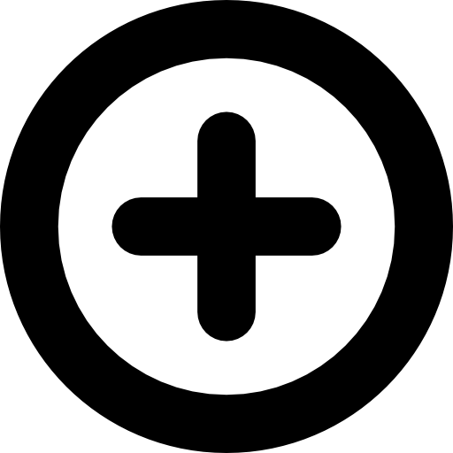

<!DOCTYPE html>
<html>
<head>
<meta http-equiv="Content-Type" content="text/html; charset=utf-8">

<link rel="stylesheet" href="https://npmcdn.com/leaflet@1.0.0-rc.1/dist/leaflet.css" />
<link rel="stylesheet" type="text/css" href="https://rawgit.com/MarcChasse/leaflet.ScaleFactor/master/leaflet.scalefactor.min.css">
<link rel="stylesheet" href="https://unpkg.com/leaflet@1.7.1/dist/leaflet.css" />
<link rel="stylesheet" href="https://cdnjs.cloudflare.com/ajax/libs/Leaflet.EasyButton/2.4.0/easy-button.css" />
<link rel="stylesheet" href="minimap/Control.MiniMap.css" />
<link href="http://netdna.bootstrapcdn.com/font-awesome/4.0.0/css/font-awesome.css" rel="stylesheet"/>
<link rel="stylesheet" href="posición/dist/L.Control.Locate.min.css" />
<link rel="stylesheet" href="geocodificar/l.geosearch.css" />
<link rel="stylesheet" href="glass/leaflet.magnifyingglass.css" />
<link rel="stylesheet" href="betterscale/L.Control.BetterScale.css" />


<title>Comuna 8</title>

<style>
* {
  padding: 0%;
  margin: 0% 0%;
}

html, body {
  height: 100%;
  width: 100%;
}

#map {
  width: 100%;
  height: 100%;
}

#norte {
  position: fixed;
  width: 2%;
  left: 3%;
  padding: 1.2%;
}
</style>

</head>
<body>
<script src="https://code.jquery.com/jquery-3.6.0.min.js"></script>
<script src="https://cdnjs.cloudflare.com/ajax/libs/leaflet/1.6.0/leaflet.js"></script>
<script src="https://unpkg.com/leaflet.heat/dist/leaflet-heat.js"></script>
<script src="https://cdnjs.cloudflare.com/ajax/libs/Leaflet.EasyButton/2.4.0/easy-button.js"></script>
<script src="minimap/Control.MiniMap.js" type="text/javascript"></script>
<script src="posición/src/L.Control.Locate.js"></script>
<script src="geocodificar/l.control.geosearch.js"></script>
<script src="geocodificar/l.geosearch.provider.esri.js"></script>
<script src="https://unpkg.com/leaflet-geosearch/dist/geosearch.js"></script>
<script src="https://kit.fontawesome.com/02eb88b373.js" crossorigin="anonymous"></script>
<script src="https://rawgit.com/MarcChasse/leaflet.ScaleFactor/master/leaflet.scalefactor.min.js"></script>
<script src="graticule/Leaflet.Graticule.js"></script>
<script src="posición/src/L.Control.Locate.js" ></script>
<script src="glass/leaflet.magnifyingglass.js"></script>
<script src="betterscale/L.Control.BetterScale.js"></script>
  
  <div id="map" style="z-index:0">
    
  </div>
  <div id="color">
    <input id="seleccionar_color" type="color"><br>
  </div>

  <script src="./comuna8.js"></script>
  <script src="./discotecas.js"></script>

  <script>
  var map = L.map('map', {
    zoomControl: false,
    maxBounds: [[3.432, -76.49175], [3.46167, -76.51]],
    minZoom: 14.4999999
  }).setView([3.4360564, -76.48175], 12);

  var mapabase = L.tileLayer('http://{s}.tile.openstreetmap.org/{z}/{x}/{y}.png', {
    maxZoom: 16,
    attribution: '&copy; <a href="http://www.openstreetmap.org/copyright">OpenStreetMap</a>'
  });

  var mapabase2 = L.tileLayer('http://{s}.tile.openstreetmap.org/{z}/{x}/{y}.png', {
    attribution: 'Map data &copy; <a href="http://openstreetmap.org">OpenStreetMap</a> contributors, <a href="http://creativecommons.org/licenses/by-sa/2.0/">CC-BY-SA</a>, Imagery © <a href="http://cloudmade.com">CloudMade</a>',
    maxZoom: 16
  }).addTo(map);

  mapabase.addTo(map);

  L.control.zoom({
    position: 'topright'
  }).addTo(map);

  L.control.scale({ position: 'bottomleft' }).addTo(map);
  var leyenda = L.control.layers({ mapabase, mapabase2 }).addTo(map);
  L.control.scalefactor().addTo(map);
  
  var icono = L.icon({
    iconSize: [35, 35],
    iconUrl: 'images/marcador.png'
  });

  L.easyButton('', function () {
    alert('reiniciando pagina');
    location.reload();
  }).addTo(map);

  L.easyButton('', function () {
   
    discotecasLayer.addTo(map);
    ruido.addTo(map);
    map.addLayer(ruido);
    if (heatLayer) {
      heatLayer.addTo(map);
    }
  }).addTo(map);

  map.doubleClickZoom.disable();
  L.latlngGraticule({
			showLabel: true,
			opacity:0.7,
			color: 'black',
			zoomInterval: [
				{start: 14, end: 14.999, interval: 0.005}

			]
		}).addTo(map);
  L.easyButton('', function () {
    var colors = $('#seleccionar_color').val();
    console.log(colors);

    var color_click = {
      radius: 8,
      fillColor: $('#seleccionar_color').val(),
      color: "black",
      weight: 1,
      opacity: 1,
      fillOpacity: 1,
    };

    discotecasLayer.eachLayer(function(layer) {
      layer.setStyle(color_click);
    });
  }).addTo(map);

  var ruido = L.tileLayer.wms('http://ws-idesc.cali.gov.co:8081/geoserver/wms?service=WMS&version=1.1.0', {
    layers: 'dagma:obs_rui_semana_noche',
    format: 'image/png',
    transparent: true
  });

  var barrios = L.tileLayer.wms('http://ws-idesc.cali.gov.co:8081/geoserver/wms?service=WMS&version=1.1.0', {
    layers: 'idesc:mc_barrios',
    format: 'image/png',
    transparent: true
  });

  var comunas = L.tileLayer.wms('http://ws-idesc.cali.gov.co:8081/geoserver/wms?service=WMS&version=1.1.0', {
    layers: 'idesc:mc_comunas',
    format: 'image/png',
    transparent: true
  });

  var discotecas = L.geoJSON(discotecas_geoJson);
  var discotecasLayer = L.layerGroup();
  var comuna8 = L.geoJSON(comuna8_geoJson);

  comuna8.addTo(map);
  barrios.addTo(map);
  comunas.addTo(map);
  map.addLayer(discotecasLayer);
  
  map.addLayer(comuna8);
  function createCircleStyle(color, radius) {
    var fillColor;
    if (radius === 5) {
      fillColor = "red";
    } else if (radius === 10) {
      fillColor = "yellow";
    } else if (radius === 20) {
      fillColor = "green";
    } else {
      fillColor = "blue";
    }

    return {
      radius: 8,
      fillColor: fillColor,
      color: "black",
      weight: 1,
      opacity: 1,
      fillOpacity: 1,
    };
  }

  discotecas_geoJson.features.forEach(function(feature) {
    var id = feature.properties.id;
    var etiqueta = feature.properties.etiqueta;
    var coordinates = feature.geometry.coordinates;
    var radius = feature.properties.radio;

    var circle = L.circleMarker([coordinates[1], coordinates[0]], createCircleStyle("blue", radius)).addTo(discotecasLayer);

    circle.bindPopup('ID: ' + id + '<br>Generador: ' + etiqueta);
  });

  var heatLayerVisible = false;

  L.easyButton('', function() {
    var heatData = [];

    discotecas_geoJson.features.forEach(function(feature) {
      var coordinates = feature.geometry.coordinates;
      heatData.push([coordinates[1], coordinates[0]]);
    });

    if (heatLayerVisible) {
      map.removeLayer(heatLayer);
      heatLayerVisible = false;
    } else {
      heatLayer = L.heatLayer(heatData, {
        radius: 50,
        gradient: { 0: 'blue', 0.5: 'lime', 1: 'red' },
        minOpacity: 0.6,
        maxZoom: 18,
        blur: 19
      }).addTo(map);
      heatLayerVisible = true;
    }
  }).addTo(map);
     
   

  leyenda.addOverlay(discotecasLayer, 'Generador de ruido');
  leyenda.addOverlay(ruido, 'Ruido fin de semana noche');
  leyenda.addOverlay(comuna8, 'Comuna 8');
  leyenda.addOverlay(comunas, 'Comunas');
  leyenda.addOverlay(barrios, 'Barrios');
  var osmUrl='http://{s}.tile.openstreetmap.org/{z}/{x}/{y}.png';
	var osmAttrib='Map data &copy; OpenStreetMap contributors';
	var osm2 = new L.TileLayer(osmUrl, {minZoom: 5, maxZoom: 15, attribution: osmAttrib });
		var miniMap2 = new L.Control.MiniMap(osm2, { toggleDisplay: true }).addTo(map);
		L.control.locate({setView:'false',flyto:'false',drawCircle:'false',showCompass:'true',drawMarker:'false',keepCurrentZoomLevel:'true',locateOptions: {
               enableHighAccuracy: true}}).addTo(map);
  var geoSearchControl = new L.Control.GeoSearch({
    provider: new L.GeoSearch.Provider.Esri(),
    showMarker: true,
    zoomLevel: null
  });
       new L.Control.GeoSearch({provider: new L.GeoSearch.Provider.Esri()}).addTo(map);	
       L.control.betterscale({position:'bottomright'}).addTo(map); 
     
       L.easyButton('', function() {
  var marcador = L.marker([3.4360564, -76.48175]);
  
  var magnifyingGlass = L.magnifyingGlass({
    layers: [marcador, mapabase],
    zoomOffset: -2
  });

  magnifyingGlass.addTo(map);
          }).addTo(map);
 
</script>
</body>
</html>
